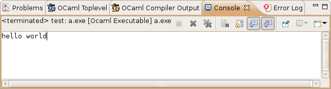

Once you have started an OCaml executable (as explained in Running an OCaml executable), you can see the output of your program in the Console view:

You can also give input to your program by directly typing inside this console.
You also have buttons in this view's toolbar to kill the program, clear the console, prevent it from scrolling, remove terminated programs, etc.